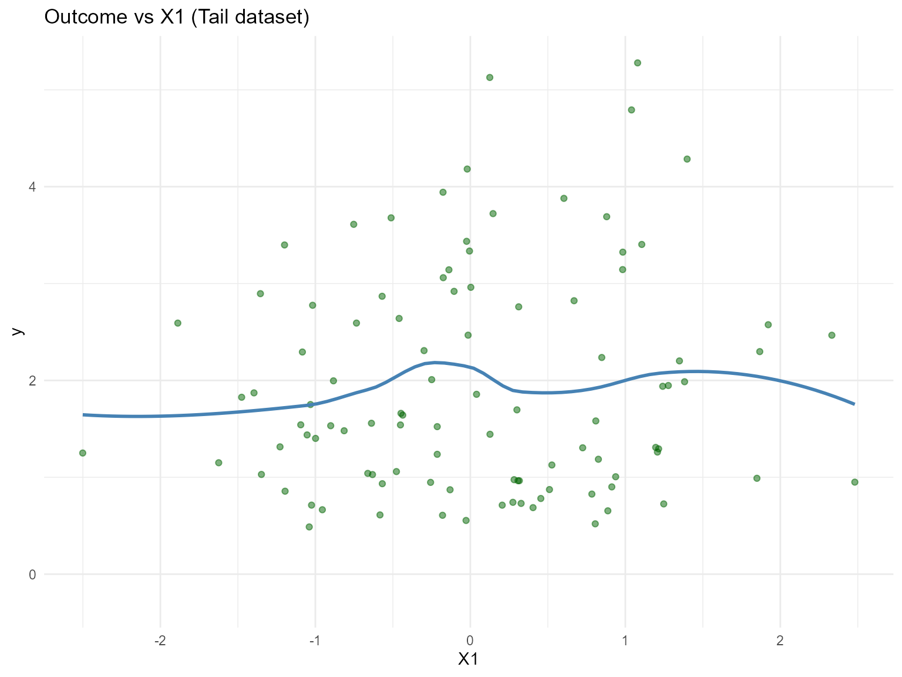
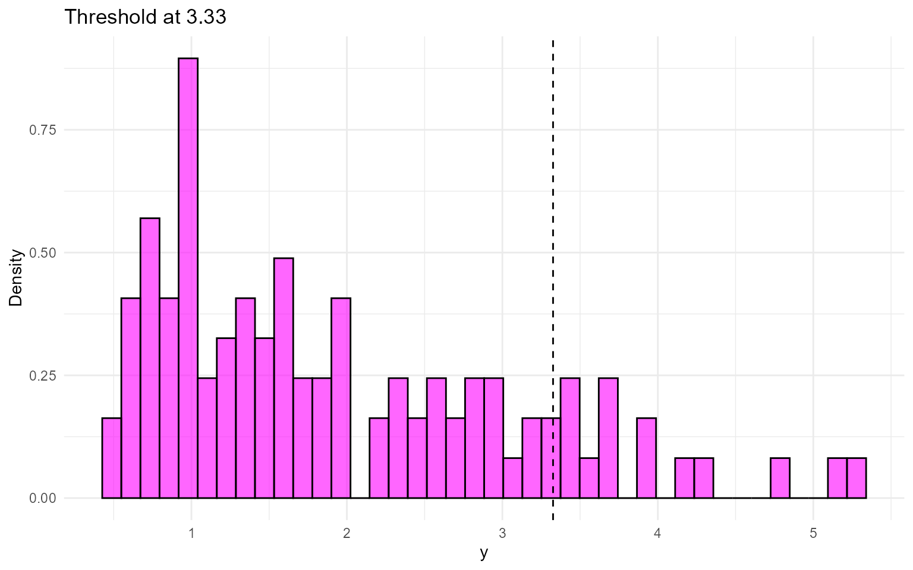
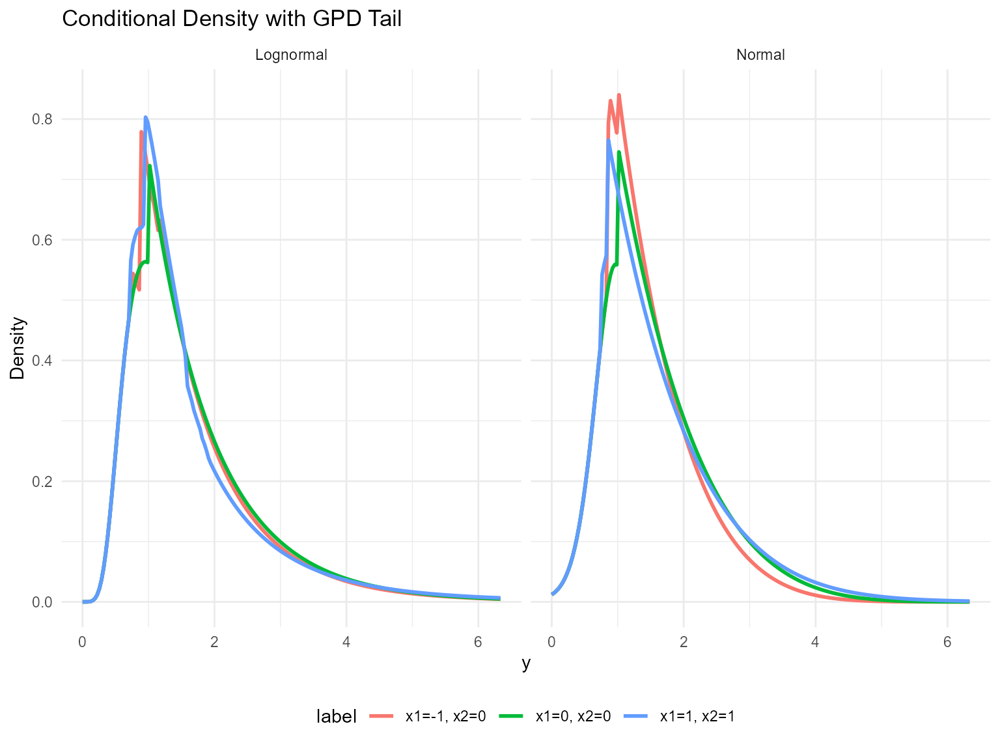
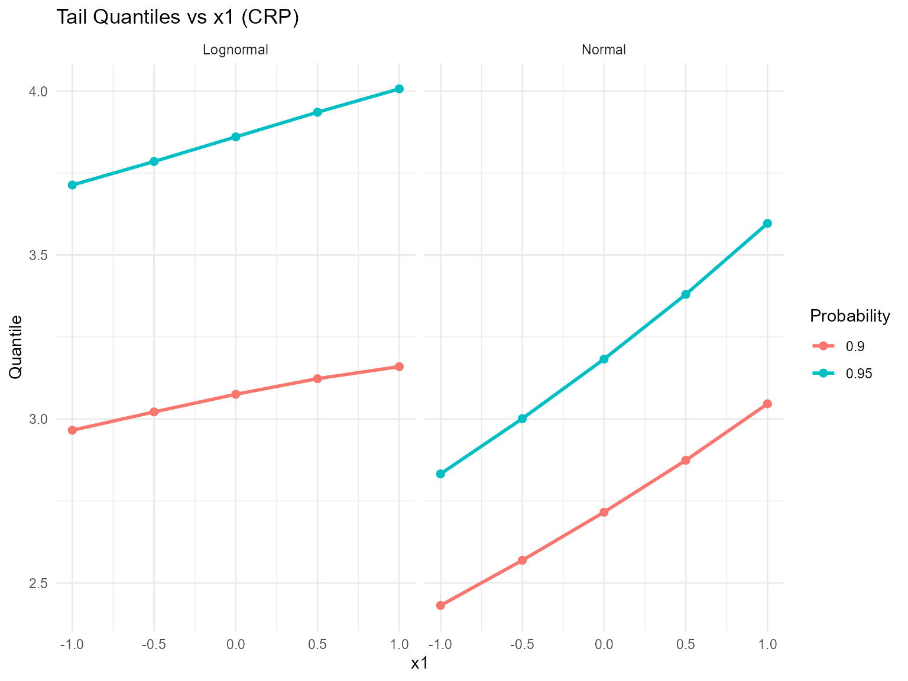
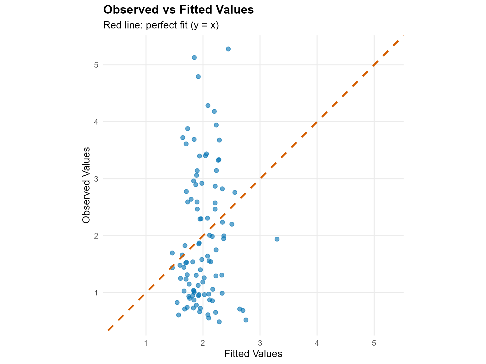
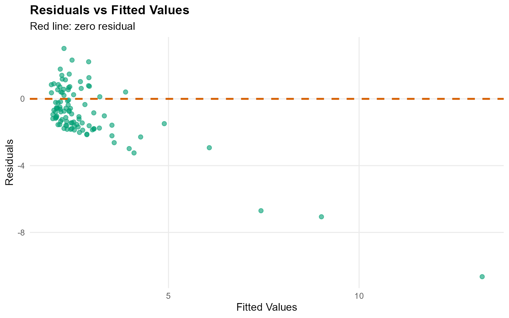
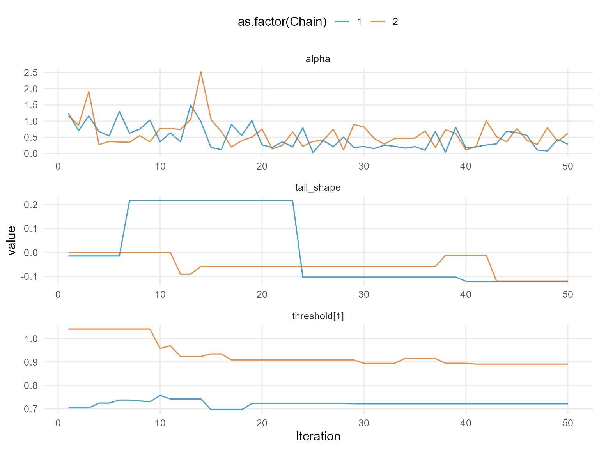
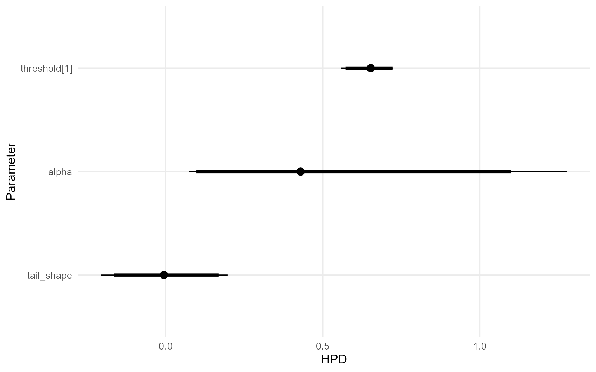

12. Conditional DPmixGPD with CRP Backend
Source:vignettes/legacy/v12-conditional-DPmixGPD-CRP.Rmd
v12-conditional-DPmixGPD-CRP.RmdLegacy vignette (for the website / historical notes). These files may not match the current exported API one-to-one. Last verified: 2026-01-18.
For the up-to-date workflow, see the main package vignettes (Introduction, Model Spec, MCMC Workflow, Unconditional/Conditional/Causal, Backends, S3 Reference).
Theory (brief)
Conditional DP mixtures allow covariate-dependent kernels. Adding a GPD tail replaces the bulk kernel beyond a threshold, improving stability for extremes. The CRP backend governs allocation dynamics in the bulk.
Conditional DPmixGPD: CRP Backend with Tail Augmentation
Purpose: Combine conditional modeling with GPD tail augmentation so each covariate slice inherits both mixture bulk and tail behavior. This extends the unconditional GPD (v06) and conditional DP (v08).
Data Setup
data("nc_posX100_p5_k4")
y <- nc_posX100_p5_k4$y
X <- as.matrix(nc_posX100_p5_k4$X)
if (is.null(colnames(X))) {
colnames(X) <- paste0("x", seq_len(ncol(X)))
}
summary_tbl <- tibble(
statistic = c("N", "Mean", "SD", "Min", "Max"),
value = c(length(y), mean(y), sd(y), min(y), max(y))
)
ggplot(data.frame(y = y, x1 = X[, 1]), aes(x = x1, y = y)) +
geom_point(alpha = 0.5, color = "darkgreen") +
geom_smooth(method = "loess", color = "steelblue", fill = NA) +
labs(title = "Outcome vs X1 (Tail dataset)", x = "X1", y = "y") +
theme_minimal()
| statistic | value |
|---|---|
| N | 100.000 |
| Mean | 1.942 |
| SD | 1.146 |
| Min | 0.488 |
| Max | 5.278 |
Threshold Selection
u_threshold <- quantile(y, 0.85)
ggplot(data.frame(y = y), aes(x = y)) +
geom_histogram(aes(y = after_stat(density)), bins = 40, fill = "magenta", alpha = 0.6, color = "black") +
geom_vline(xintercept = u_threshold, linetype = "dashed", color = "black") +
labs(title = paste("Threshold at", signif(u_threshold, 3)), x = "y", y = "Density") +
theme_minimal()
Model Specification & Bundle
bundle_cond_gpd_lognormal <- build_nimble_bundle(
y = y,
X = X,
kernel = "lognormal",
backend = "crp",
GPD = TRUE,
components = 5,
param_specs = list(
gpd = list(
threshold = list(mode = "link", link = "exp")
)
),
mcmc = mcmc
)
bundle_cond_gpd_normal <- build_nimble_bundle(
y = y,
X = X,
kernel = "normal",
backend = "crp",
GPD = TRUE,
components = 5,
param_specs = list(
gpd = list(
threshold = list(mode = "link", link = "exp")
)
),
mcmc = mcmc
)Running MCMC
fit_cond_gpd_lognormal <- load_or_fit("v12-conditional-DPmixGPD-CRP-fit_cond_gpd_lognormal", run_mcmc_bundle_manual(bundle_cond_gpd_lognormal))
fit_cond_gpd_normal <- load_or_fit("v12-conditional-DPmixGPD-CRP-fit_cond_gpd_normal", run_mcmc_bundle_manual(bundle_cond_gpd_normal))
summary(fit_cond_gpd_lognormal)MixGPD summary | backend: Chinese Restaurant Process | kernel: Lognormal Distribution | GPD tail: TRUE | epsilon: 0.025
n = 100 | components = 5
Summary
Initial components: 5 | Components after truncation: 1
WAIC: 286.942
lppd: -132.369 | pWAIC: 11.102
Summary table
parameter mean sd q0.025 q0.500 q0.975 ess
weights[1] 0.969 0.087 0.662 1 1 14.709
alpha 0.23 0.272 0.006 0.145 0.861 100.96
beta_tail_scale[1] 0.208 0.154 -0.059 0.216 0.48 39.63
beta_tail_scale[2] -0.063 0.207 -0.432 -0.083 0.4 34.776
beta_tail_scale[3] -0.077 0.116 -0.287 -0.066 0.137 31.801
beta_tail_scale[4] 0.389 0.282 -0.152 0.403 0.879 22.586
beta_tail_scale[5] 0.011 0.151 -0.273 -0.003 0.32 20.093
beta_threshold[1] -0.111 0.182 -0.331 -0.171 0.336 9.439
beta_threshold[2] -0.16 0.172 -0.426 -0.181 0.197 30.644
beta_threshold[3] 0.168 0.233 -0.213 0.175 0.491 6.338
beta_threshold[4] -0.036 0.145 -0.285 -0.046 0.241 32.543
beta_threshold[5] 0.092 0.145 -0.185 0.083 0.374 13.577
tail_shape -0.012 0.108 -0.237 -0.006 0.247 22.55
meanlog[1] 0.515 0.346 0.208 0.47 0.893 110.876
sdlog[1] 0.594 0.205 0.418 0.554 0.931 68.361
summary(fit_cond_gpd_normal)MixGPD summary | backend: Chinese Restaurant Process | kernel: Normal Distribution | GPD tail: TRUE | epsilon: 0.025
n = 100 | components = 5
Summary
Initial components: 5 | Components after truncation: 2
WAIC: 235.282
lppd: -98.371 | pWAIC: 19.271
Summary table
parameter mean sd q0.025 q0.500 q0.975 ess
weights[1] 0.615 0.081 0.387 0.62 0.74 28.409
weights[2] 0.354 0.056 0.24 0.36 0.473 46.279
alpha 0.51 0.327 0.074 0.429 1.276 150
beta_tail_scale[1] 0.154 0.139 -0.108 0.135 0.441 24.614
beta_tail_scale[2] -0.104 0.217 -0.471 -0.098 0.373 52.162
beta_tail_scale[3] 0.169 0.127 -0.075 0.161 0.426 45.978
beta_tail_scale[4] 0.475 0.244 0.141 0.449 0.936 42.386
beta_tail_scale[5] -0.01 0.099 -0.189 -0.013 0.161 12.137
beta_threshold[1] 0.017 0.031 -0.049 0.018 0.06 19.974
beta_threshold[2] -0.064 0.025 -0.082 -0.079 -0.011 1.679
beta_threshold[3] -0.315 0.067 -0.361 -0.331 -0.168 22.339
beta_threshold[4] 0.117 0.068 -0.023 0.1 0.223 8.74
beta_threshold[5] -0.146 0.032 -0.198 -0.142 -0.09 3.157
tail_shape -0.009 0.107 -0.205 -0.006 0.197 18.486
mean[1] 6.315 3.994 0.885 5.189 14.914 4.522
mean[2] 1.686 2.336 0.769 0.876 8.492 32.56
sd[1] 0.993 0.821 0.138 0.791 3.447 28.11
sd[2] 0.434 0.631 0.169 0.225 1.795 24.062
params_cond_gpd <- params(fit_cond_gpd_lognormal)
params_cond_gpdPosterior mean parameters
$alpha
[1] "0.23"
$w
[1] "0.969"
$meanlog
[1] "0.515"
$sdlog
[1] "0.594"
$beta_threshold
[1] "-0.111" "-0.16" "0.168" "-0.036" "0.092"
$beta_tail_scale
[1] "0.208" "-0.063" "-0.077" "0.389" "0.011"
$tail_shape
[1] "-0.012"Conditional Tail-aware Predictions
X_new <- rbind(
c(-1, 0, 0, 0, 0),
c(0, 0, 0, 0, 0),
c(1, 1, 0, 0, 0)
)
colnames(X_new) <- colnames(X)
y_grid <- seq(0, max(y) * 1.2, length.out = 200)
df_pred_lognormal <- lapply(seq_len(nrow(X_new)), function(i) {
pred <- predict(fit_cond_gpd_lognormal, x = as.matrix(X_new[i, , drop = FALSE]), y = y_grid, type = "density")
data.frame(
y = pred$fit$y,
density = pred$fit$density,
label = paste("x1=", X_new[i, 1], ", x2=", X_new[i, 2], sep = ""),
model = "Lognormal"
)
})
df_pred_normal <- lapply(seq_len(nrow(X_new)), function(i) {
pred <- predict(fit_cond_gpd_normal, x = as.matrix(X_new[i, , drop = FALSE]), y = y_grid, type = "density")
data.frame(
y = pred$fit$y,
density = pred$fit$density,
label = paste("x1=", X_new[i, 1], ", x2=", X_new[i, 2], sep = ""),
model = "Normal"
)
})
bind_rows(df_pred_lognormal, df_pred_normal) %>%
ggplot(aes(x = y, y = density, color = label)) +
geom_line(linewidth = 1) +
facet_wrap(~ model) +
labs(title = "Conditional Density with GPD Tail", x = "y", y = "Density") +
theme_minimal() +
theme(legend.position = "bottom")
Tail Quantiles vs Covariates
X_grid <- cbind(x1 = seq(-1, 1, length.out = 5), x2 = 0, x3 = 0, x4 = 0, x5 = 0)
colnames(X_grid) <- colnames(X)
quant_probs <- c(0.90, 0.95)
pred_q_lognormal <- predict(fit_cond_gpd_lognormal, x = as.matrix(X_grid), type = "quantile", index = quant_probs)
pred_q_normal <- predict(fit_cond_gpd_normal, x = as.matrix(X_grid), type = "quantile", index = quant_probs)
quant_df_lognormal <- pred_q_lognormal$fit
quant_df_lognormal$x1 <- X_grid[quant_df_lognormal$id, "x1"]
quant_df_lognormal$model <- "Lognormal"
quant_df_normal <- pred_q_normal$fit
quant_df_normal$x1 <- X_grid[quant_df_normal$id, "x1"]
quant_df_normal$model <- "Normal"
bind_rows(quant_df_lognormal, quant_df_normal) %>%
ggplot(aes(x = x1, y = estimate, color = factor(index), group = index)) +
geom_line(linewidth = 1) +
geom_point(size = 2) +
facet_wrap(~ model) +
labs(title = "Tail Quantiles vs x1 (CRP)", x = "x1", y = "Quantile", color = "Probability") +
theme_minimal()
Residuals & Diagnostics


plot(fit_cond_gpd_lognormal, family = "traceplot")
=== traceplot ===
plot(fit_cond_gpd_normal, family = "caterpillar")
=== caterpillar ===
Takeaways
- Conditional DPmix with a GPD tail lets posterior-mean extreme quantiles vary with covariates.
- The CRP backend samples the bulk and tail jointly while thresholding at the 85th percentile.
-
predict()+plot()remain the main tools for densities, survival curves, and quantiles; residual diagnostics check fit quality. - Next: Mirror this workflow with the SB backend in
v11.